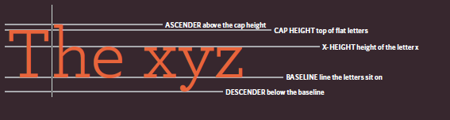

id has to be unique and no repeat of id value again
id="name"
Class attribute
Classclass values can be use at a=many places
class="txt"
then we can use this class attribute with this same
value at different tags
but id value has to be unique means that value should be use only once
if you want to make another id you can do but id value must not be duplicate
div element <div>
we use duv tag to group a set of elements together in obe block-level box
div work as container it is block level element
div work as to create divisions
span <span>
span act as equalent to div but inline element
it is used to either
Contain a section of text
where there is no other suitable
elemnent to differentiste it from its
surronding text
span contain a number of inline elements
the moset common reason why people use <span>
it to control apperance of the content of these
elements using CSS
Iframe <iframe>
iframe is like a cut piece in your window and in that window
you can see another page term iframe means inline frame
Information about your page
meta <meta>
<meta> element lives inside <head>
and contains information about that web page
it is not visible to users but fulfils a numbers of
purposes such as telling search engines about your pages,
who created it and whether or not it is time
sensitive if time sensitive it can be set to expire
i has name attribute and value can be anything
common one are
description
This contains a description
of the page. This description
is commonly used by search
engines to understand what the
page is about and should be a
maximum of 155 characters.
Sometimes it is also displayed in
search engine results.
This contains a description
of the page. This description
is commonly used by search
engines to understand what the
page is about and should be a
maximum of 155 characters.
Sometimes it is also displayed in
search engine results.
keywords
This contains a list of commaseparated
words that a user
might search on to find the page.
In practice, this no longer has
any noticeable effect on how
search engines index your site.
This contains a list of commaseparated
words that a user
might search on to find the page.
In practice, this no longer has
any noticeable effect on how
search engines index your site.
robots
This indicates whether search
engines should add this page
to their search results or not. A
value of noindex can be used if
this page should not be added. A
value of nofollow can be used
if search engines should add this
page in their results but not any
pages that it links to.
This indicates whether search
engines should add this page
to their search results or not. A
value of noindex can be used if
this page should not be added. A
value of nofollow can be used
if search engines should add this
page in their results but not any
pages that it links to.
using external css
using internal css
using inline css
direct child li > a { } --
Matches an element that is a
direct child of another direct child mean write after < li > tag if < a > exist otherwise no effect
Descendant Selector div b { } --
Matches an element that is a descendent of another specified element (not just a direct child of that element)
Targets any < div > elements that
sit inside a < b > element, even if
there are other elements nested
between them
Adjacent Sibling dt+dd { } --
Matches an element that is the next sibling of another
Targets the first < dd > element
after any < dt > element (but not
other < dd > elements)
Targets any elements that
sit inside a element, even if
there are other elements nested
between them
Chapter #11 :COLOR
Taimoor
RGB value 0-255 (0 is dark black)
HEX code
Name of color
HSL
hue 0-360
staturation 0 mean gray high mean no gray
light
chapter#12 :Text
Text type and size
Bolt,italic,underline
line spacing,words letter
The properties that allow you to control
the appearance of text can be split into two groups:
Those that directly affect the font and its appearance
(including the typeface, whether it is regular, bold or italic,
and the size of the text)
Those that would have the same effect on text no matter
what font you were using (including the color of text and
the spacing between words and letters)

WEIGHT
The font weight not only adds
emphasis but can also affect
the amount of white space and
contrast on a page.
STYLE
Italic fonts have a cursive aspect
to some of the lettering. Oblique
font styles take the normal style
and put it on an angle.
STRETCH
In condensed (or narrow)
versions of the font, letters are
thinner and closer together.
In expanded versions they are
thicker and further apart.